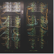

Адрес: 127254, Россия, Москва, ул. Добролюбова, 20А
Адрес: 127254, Россия, Москва, ул. Добролюбова, 20А Тел.: +7 (495) 916-2884, факс: +7 (495) 916-1301
Тел.: +7 (495) 916-2884, факс: +7 (495) 916-1301 Электронная почта: info@riep.ru
Электронная почта: info@riep.ruМиссия, цели и задачи журнала h1


Рубрики журнала
Облако тэгов
Журнал индексируется


Облако тэгов h2
Окончила экономический факультет, (специальность бухгалтерский учет, анализ и аудит, 2003 г.), юридический факультет (специальность юриспруденция, 2004 г.) НИУ ФГБУ ВПО МГУ им. Н.П. Огарева; аспирантуру (2006 г.) НИИГН при Правительстве Республики Мордовия, докторантуру (2012 г.) НИУ ФГБУ ВПО МГУ им. Н.П. Огарева. Тема докторской диссертации: "Система управления конкурентоспособностью предприятий сферы технического обслуживания и оказания транспортных услуг" (научная специальность 08.00.05)
Миссия журнала: h3
Окончила экономический факультет, (специальность бухгалтерский учет, анализ и аудит, 2003 г.), юридический факультет (специальность юриспруденция, 2004 г.) НИУ ФГБУ ВПО МГУ им. Н.П. Огарева; аспирантуру (2006 г.) НИИГН при Правительстве Республики Мордовия, докторантуру (2012 г.) НИУ ФГБУ ВПО МГУ им. Н.П. Огарева. Тема докторской диссертации: "Система управления конкурентоспособностью предприятий сферы технического обслуживания и оказания транспортных услуг" (научная специальность 08.00.05)
Журнал позиционируется как ведущий журнал по науковедению в области государственного управления и регулирования сферами науки и технологий, инновации, образования.
Окончила экономический факультет, (специальность бухгалтерский учет, анализ и аудит, 2003 г.), юридический факультет (специальность юриспруденция, 2004 г.) НИУ ФГБУ ВПО МГУ им. Н.П. Огарева; аспирантуру (2006 г.) НИИГН при Правительстве Республики Мордовия, докторантуру (2012 г.) НИУ ФГБУ ВПО МГУ им. Н.П. Огарева. Тема докторской диссертации: "Система управления конкурентоспособностью предприятий сферы технического обслуживания и оказания транспортных услуг" (научная специальность 08.00.05)
Окончила экономический факультет, (специальность бухгалтерский учет, анализ и аудит, 2003 г.), юридический факультет (специальность юриспруденция, 2004 г.) НИУ ФГБУ ВПО МГУ им. Н.П. Огарева; аспирантуру (2006 г.) НИИГН при Правительстве Республики Мордовия, докторантуру (2012 г.) НИУ ФГБУ ВПО МГУ им. Н.П. Огарева. Тема докторской диссертации: "Система управления конкурентоспособностью предприятий сферы технического обслуживания и оказания транспортных услуг" (научная специальность 08.00.05)
«Лифт в будущее» — всероссийская программа Благотворительного фонда «Система» по поддержке детского и юношеского технического творчества, научно-исследовательской деятельности и инженерно-конструкторского проектирования. Программа ориентирована на школьников и студентов, имеющих высокую мотивацию к изучению естественнонаучных и точных дисциплин, а также преподавателей среднего, высшего
Окончила экономический факультет, (специальность бухгалтерский учет, анализ и аудит, 2003 г.), юридический факультет (специальность юриспруденция, 2004 г.) НИУ ФГБУ ВПО МГУ им. Н.П. Огарева; аспирантуру (2006 г.) НИИГН при Правительстве Республики Мордовия, докторантуру (2012 г.) НИУ ФГБУ ВПО МГУ им. Н.П. Огарева. Тема докторской диссертации: "Система управления конкурентоспособностью предприятий сферы технического обслуживания и оказания транспортных услуг" (научная специальность 08.00.05)
Принимала участие в конференциях и семинарах
-
Цифровая экономика и «Индустрия 4.0»: проблемы и перспективы);
- «Индустрия 4.0»: проблемы и перспективы;
- Проблемы и перспективы;
- Новая экономическая реальность, кластерные инициативы и развитие промышленности (ИНПРОМ-2016) (Санкт-Петербург, Хельсинки, Стокгольм, Таллин, 19 – 26 мая 2016);
- Глобальные вызовы в экономике и развитие промышленности (INDUSTRY-2016) (Санкт-Петербург, Израиль, 15-23 сентября 2016 года).
Окончила экономический факультет, (специальность бухгалтерский учет, анализ и аудит, 2003 г.), юридический факультет (специальность юриспруденция, 2004 г.) НИУ ФГБУ ВПО МГУ им. Н.П. Огарева; аспирантуру (2006 г.) НИИГН при Правительстве Республики Мордовия, докторантуру (2012 г.) НИУ ФГБУ ВПО МГУ им. Н.П. Огарева. Тема докторской диссертации: "Система управления конкурентоспособностью предприятий сферы технического обслуживания и оказания транспортных услуг" (научная специальность 08.00.05)
Опубликовала более 90 научных и учебно-методических работ
-
Ilina I., Zharova E., Agamirova E., Kamenskiy A., Turginbayeva A. NETWORK PLATFORM OF COMMERCIALIZING THE RESULTS OF R AND D // International Journal of Civil Engineering and Technology. 2019. Т. 10. № 1. С. 2647-2657
- Ilina I., Zharova E., Agamirova E.
- Engineering and Technology.
- Ilina I., Zharova E., Zolotarev D. DIGITAL PLATFORM FOR COMMUNICATION
- Ilina I.E., Zharova E. N., Burlankov S. P. Analysis of the Efficacy of Public Spending on Research and Development in State Programs // Studies on Russian Economic Development, 2018, Vol. 29, No. 2, pp. 207–213 (Scopus); DOI: 10.1134/S1075700718020077
- Ильина И.Е. Мониторинг реализации стратегии научно-технологического развития
Окончила экономический факультет, (специальность бухгалтерский учет, анализ и аудит, 2003 г.), юридический факультет (специальность юриспруденция, 2004 г.) НИУ ФГБУ ВПО МГУ им. Н.П. Огарева; аспирантуру (2006 г.) НИИГН при Правительстве Республики Мордовия, докторантуру (2012 г.) НИУ ФГБУ ВПО МГУ им. Н.П. Огарева. Тема докторской диссертации: "Система управления конкурентоспособностью предприятий сферы технического обслуживания и оказания транспортных услуг" (научная специальность 08.00.05)
Окончила экономический факультет, (специальность бухгалтерский учет, анализ и аудит, 2003 г.), юридический факультет (специальность юриспруденция, 2004 г.) НИУ ФГБУ ВПО МГУ им. Н.П. Огарева; аспирантуру (2006 г.) НИИГН при Правительстве Республики Мордовия, докторантуру (2012 г.) НИУ ФГБУ ВПО МГУ им. Н.П. Огарева. Тема докторской диссертации: "Система управления конкурентоспособностью предприятий сферы технического обслуживания и оказания транспортных услуг" (научная специальность 08.00.05)
Окончила экономический факультет, (специальность бухгалтерский учет, анализ и аудит, 2003 г.), юридический факультет (специальность юриспруденция, 2004 г.) НИУ ФГБУ ВПО МГУ им. Н.П. Огарева; аспирантуру (2006 г.) НИИГН при Правительстве Республики Мордовия, докторантуру (2012 г.) НИУ ФГБУ ВПО МГУ им. Н.П. Огарева. Тема докторской диссертации: "Система управления конкурентоспособностью предприятий сферы технического обслуживания и оказания транспортных услуг" (научная специальность 08.00.05)
Файлы для скачивания
Окончила экономический факультет, (специальность бухгалтерский учет, анализ и аудит, 2003 г.), юридический факультет (специальность юриспруденция, 2004 г.) НИУ ФГБУ ВПО МГУ им. Н.П. Огарева; аспирантуру (2006 г.) НИИГН при Правительстве Республики Мордовия, докторантуру (2012 г.) НИУ ФГБУ ВПО МГУ им. Н.П. Огарева. Тема докторской диссертации: "Система управления конкурентоспособностью предприятий сферы технического обслуживания и оказания транспортных услуг" (научная специальность 08.00.05)
| Название | Значение | Значение 2 |
|---|---|---|
| Внешний вид документов о соответствии довольно часто интересует компании, которые выставляют наличие сертификата ГОСТ ISO 9001-2011 в качестве условия | 1 223 | 4 213 |
| Внешний вид документов о соответствии довольно часто интересует компании, которые выставляют наличие сертификата ГОСТ ISO 9001-2011 в качестве условия | 1 223 | 4 213 |
| Внешний вид документов о соответствии довольно часто интересует компании, которые выставляют наличие сертификата ГОСТ ISO 9001-2011 в качестве условия | 1 223 | 4 213 |
| Внешний вид документов о соответствии довольно часто интересует компании, которые выставляют наличие сертификата ГОСТ ISO 9001-2011 в качестве условия | 1 223 | 4 213 |
Окончила экономический факультет, (специальность бухгалтерский учет, анализ и аудит, 2003 г.), юридический факультет (специальность юриспруденция, 2004 г.) НИУ ФГБУ ВПО МГУ им. Н.П. Огарева; аспирантуру (2006 г.) НИИГН при Правительстве Республики Мордовия, докторантуру (2012 г.) НИУ ФГБУ ВПО МГУ им. Н.П. Огарева. Тема докторской диссертации: "Система управления конкурентоспособностью предприятий сферы технического обслуживания и оказания транспортных услуг" (научная специальность 08.00.05)
| Внешний вид документов о соответствии довольно часто интересует компании, которые выставляют наличие сертификата ГОСТ ISO 9001-2011 в качестве условия | 2 884 |
| Внешний вид документов о соответствии довольно часто интересует компании, которые выставляют наличие сертификата ГОСТ ISO 9001-2011 в качестве условия | 4 213 |
| Внешний вид документов о соответствии довольно часто интересует компании, которые выставляют наличие сертификата ГОСТ ISO 9001-2011 в качестве условия | 2 884 |
| Внешний вид документов о соответствии довольно часто интересует компании, которые выставляют наличие сертификата ГОСТ ISO 9001-2011 в качестве условия | 4 213 |
Окончила экономический факультет, (специальность бухгалтерский учет, анализ и аудит, 2003 г.), юридический факультет (специальность юриспруденция, 2004 г.) НИУ ФГБУ ВПО МГУ им. Н.П. Огарева; аспирантуру (2006 г.) НИИГН при Правительстве Республики Мордовия, докторантуру (2012 г.) НИУ ФГБУ ВПО МГУ им. Н.П. Огарева. Тема докторской диссертации: "Система управления конкурентоспособностью предприятий сферы технического обслуживания и оказания транспортных услуг" (научная специальность 08.00.05)
Формы
Окончила экономический факультет, (специальность бухгалтерский учет, анализ и аудит, 2003 г.), юридический факультет (специальность юриспруденция, 2004 г.) НИУ ФГБУ ВПО МГУ им. Н.П. Огарева; аспирантуру (2006 г.) НИИГН при Правительстве Республики Мордовия, докторантуру (2012 г.) НИУ ФГБУ ВПО МГУ им. Н.П. Огарева. Тема докторской диссертации: "Система управления конкурентоспособностью предприятий сферы технического обслуживания и оказания транспортных услуг" (научная специальность 08.00.05)
Подробнее  Миссия журнала: h3 Окончила экономический факультет, (специальность бухгалтерский учет, анализ и аудит, 2003 г.), юридический факультет (специальность юриспруденция, 2004 г.) НИУ ФГБУ ВПО МГУ им. Н.П. Огарева; аспирантуру (2006 г.) НИИГН Сбросить Далее
Подробнее Миссия журнала: h3 Окончила экономический факультет, (специальность бухгалтерский учет, анализ и аудит, 2003 г.), юридический факультет (специальность юриспруденция, 2004 г.) НИУ ФГБУ ВПО МГУ им. Н.П. Огарева; аспирантуру (2006 г.) НИИГН Сбросить Далее